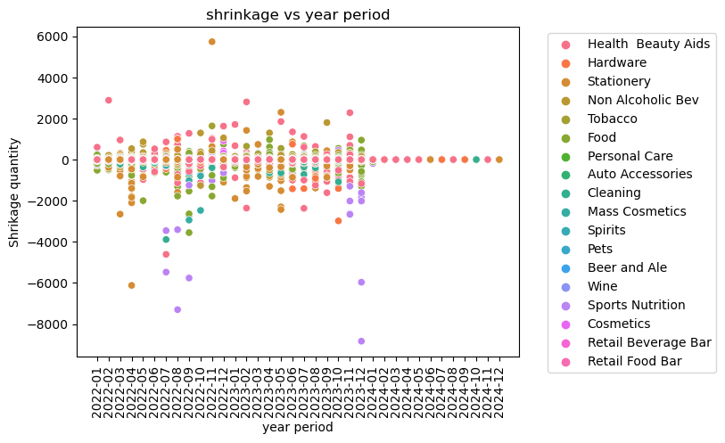

filtered_data = dcopy[cond]
create_visual(filtered_data["LOB_DESC"], filtered_data)
DDD = []
def create_dropdown(opts, caption='Col:'):
dropdown = widgets.Dropdown(
options=opts,
value='-',
description=caption,
disabled=False,
)
dropdown.observe(on_dropdown_change, names='value')
dropdown.ind = None
return dropdown
def on_dropdown_change(change):
for i, dd in enumerate(DDD):
dd.ind = i
if change['owner'].ind % 2:
#VAL SELECTORS
if change['new'] != '-':
if change['owner'].ind == len(DDD)-1:
opts = ['-'] + [q for q in data.columns]
new_dropdown = create_dropdown(opts)
display(new_dropdown)
DDD.append(new_dropdown)
else:
pass
else:
#COL SELECTORS
if change['new'] != '-':
opts = ['-'] + data[change.new].unique().tolist()
new_dropdown = create_dropdown(opts, 'Val:')
display(new_dropdown)
DDD.append(new_dropdown)
else:
DDD[change['owner'].ind + 1].close()
del DDD[change['owner'].ind + 1]
if change['owner'].ind != len(DDD)-1:
DDD[change['owner'].ind].close()
del DDD[change['owner'].ind]
def create_visual(feature, data):
sns.scatterplot(x = data["PERIOD"], y = data["TY_QTY"], hue = feature, data = data)
title = f"shrinkage vs year period"
plt.title(title)
plt.xlabel("year period")
plt.ylabel(f"Shrikage quantity")
plt.legend(bbox_to_anchor=(1.05, 1), loc='upper left')
plt.xticks(rotation='vertical')
plt.show()
# Create the initial dropdown and display it
initial_dropdown = create_dropdown(opts = ['-'] + [q for q in data.columns])
DDD.append(initial_dropdown)
display(initial_dropdown)dcopy = data
last = None
cond = True
for i, v in enumerate(DDD):
if i % 2:
cond &= (dcopy[last] == v.value)
else:
last = v.value
dcopy[cond]| COMMAND_CD | SITE_ID | ADJUSTMENT_CATEGORY | DESCRIPTION | DIVISION | LOB_DESC | DEPT_DESC | CLASS | SUB_CLASS | MERCHANDISING_YEAR | MERCHANDISING_PERIOD | PERIOD | TY_QTY | TY_VALUE | LY_QTY2 | LY_VALUE2 | LM_QTY3 | LM_VALUE3 | |
|---|---|---|---|---|---|---|---|---|---|---|---|---|---|---|---|---|---|---|
| 2 | CPM | 4100 | Shrink | 300-ON HAND CORRECTION | Consumables | Health Beauty Aids | HEALTH & BEAUTY AIDS | 2100 - FOOT CARE | 2102 - ANTIFUNGAL | 2022 | 1 | 2022-01 | -2 | (5.98) | - | - | - | - |
| 18 | TWM | 13100 | Shrink | 300-ON HAND CORRECTION | Consumables | Hardware | GENERAL HARDWARE | 1600 - NAILS/SCREWS/FASTENERS | 1601 - NAILS/SCREWS/FASTENERS | 2022 | 1 | 2022-01 | -2 | (11.98) | - | - | - | - |
| 23 | CPM | 4100 | Shrink | 300-ON HAND CORRECTION | Consumables | Stationery | STATIONERY SUPPLIES | 1700 - PAPER PRODUCTS | 1701 - MULTIPURPOSE PAPER | 2022 | 1 | 2022-01 | -6 | (13.14) | - | - | - | - |
| 25 | TWM | 13100 | Shrink | 300-ON HAND CORRECTION | Consumables | Stationery | STATIONERY SUPPLIES | 1700 - PAPER PRODUCTS | 1701 - MULTIPURPOSE PAPER | 2022 | 1 | 2022-01 | -1 | (10.99) | - | - | - | - |
| 26 | TWM | 13100 | Shrink | 300-ON HAND CORRECTION | Consumables | Non Alcoholic Bev | NON-ALCOHOLIC BEVERAGES | 3000 - ENHANCER DROPS | 3002 - MIO | 2022 | 1 | 2022-01 | -1 | (3.99) | - | - | - | - |
| ... | ... | ... | ... | ... | ... | ... | ... | ... | ... | ... | ... | ... | ... | ... | ... | ... | ... | ... |
| 578142 | TWM | 13100 | Shrink | 300-ON HAND CORRECTION | Consumables | Stationery | STATIONERY SUPPLIES | 1700 - PAPER PRODUCTS | 1704 - NOTEBOOKS 8X11 | 2024 | 12 | 2024-12 | 0 | - | 1.00 | 0.99 | - | - |
| 578159 | CLM | 5303 | Shrink | 301-CYCLE COUNT | Consumables | Sports Nutrition | SPORT NUTRITION | 1100 - SUPPLEMENTS | 1102 - PROTEIN | 2024 | 12 | 2024-12 | 0 | - | - | - | - | - |
| 578167 | SCM | 18100 | Shrink | 300-ON HAND CORRECTION | Consumables | Stationery | STATIONERY SUPPLIES | 1700 - PAPER PRODUCTS | 1705 - INDEX CARDS | 2024 | 12 | 2024-12 | 0 | - | (1.00) | (0.59) | - | - |
| 578178 | RDCE | 60001 | Shrink | 1-OPERATIONAL | Consumables | Cleaning | Cleaning Supplies | 1800 - HOUSEHOLD CLEANERS | 1807 - ALL PURPOSE | 2024 | 12 | 2024-12 | 0 | - | (1,738.00) | (5,891.82) | - | - |
| 578198 | PNM | 10321 | Shrink | 300-ON HAND CORRECTION | Consumables | Stationery | STATIONERY SUPPLIES | 1700 - PAPER PRODUCTS | 1705 - INDEX CARDS | 2024 | 12 | 2024-12 | 0 | - | - | 0.20 | - | - |
154718 rows × 18 columns